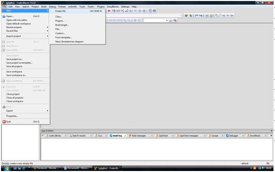
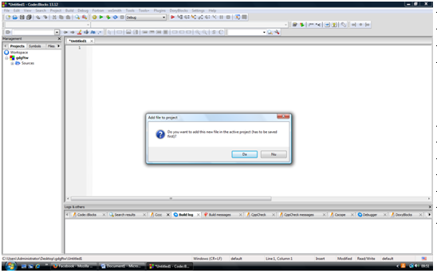
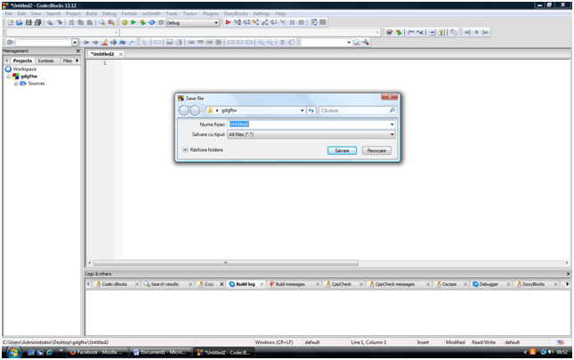

Definitie: Un fisier este o colectie omogena de date, identificatã prin nume.extensie
In C++ se lucreaza cu fisiere text sau binare. Noi vom invata sa lucram cu fisiere text.
Operatiile permise asupra fisierelor prin intermediul unui program C++ sunt:
• Citire din fisier
• Scriere in fisier
• Adaugare la sfarsitul unui fisier
Etapele de lucru cu fisiere:
1.1. Includerea bibliotecii de lucru cu fisiere:
#include< fstream >
Obs: daca in program avem si instructiunile cin, cout, atunci se va include si biblioteca < iostream >, altfel nu va mai fi nevoie de ea
1.2. Deschiderea fisierului:
1.Pentru citire: cand vrem sa citim datele de intrare ale problemei din fisier (ne va scuti de reintroduerea datelor de intrate la fiecare rulare a programului)
ifstream nl(“nume.ext”);
sau
fstream nl(“nume.ext”, ios::in);
1.Pentru scriere: daca vrem ca rezultatele problemei sa fie salvate intr-un fisier
ofstream nl(“nume.ext”);
sau
fstream nl(“nume.ext”, ios::out);
1.Pentru adaugare: daca vrem sa scriem datele de iesire la sfarsitul fisierului are contine date de intrare
fstream nl(“nume.ext”, ios::app);
Observatii:
-nl- numele logic al fisierului (in identificator care va reprezenta fisierul in program. Ex> f, g, q, f1, etc)
-un fisier deschis pentru citire trebuie creat inainte de rularea programului, ca sa salvam in el datele de intrare. Acest lucrul se face astfel:


Click pe „Da”

Se salveaza fisierul cu numele si extensia din problema si sa da „salvare”.Apoi se scriu datele de intrare in el.
Obs: In mod asemanator se creaza un fisier gol cu numele si extensia din program pentru fisierul de iesire. Acesta va contine dupa rularea programului rezultatele problemei.
1.3. Prelucrarea datelor din fisier
1.Citire din fisier (evident, din cel deschis pentru citire sau adaugare!)
nl>>var1>>var2>>…>>varn;
Exemplu: f>>a>>b; (am citit din fisierul f variabilele a si b)
1.Scriere in fisier (in cel deschis pentru scriere sau adaugare)
2.Exemplu: g<<”a=”<
C1. Daca se stie numarul de valori pe care le avem de parcurs:
for(i=1;i<=nr valori;i++)
{ nl>>x;
//prelucram x}
C2. Daca nu se stie numarul de valori pe care le citim
{//prelucram x}
Sau
//prelucram x;}
Aici nl.eof() este o functie specifica lucrului cu fisiere care are valoarea 1 daca s-a ajuns la sfarsitul fisierului nl sau 0 in caz contrar (recomand prima varianta de parcurgere, din cauza unor erori de citire a ultimei valori in unele situatii in care se foloseste a doua varianta)
1. Inchiderea fisierului
nl.close(); - pentru fiecare fisier in parte pe care l-ati deschis in program.